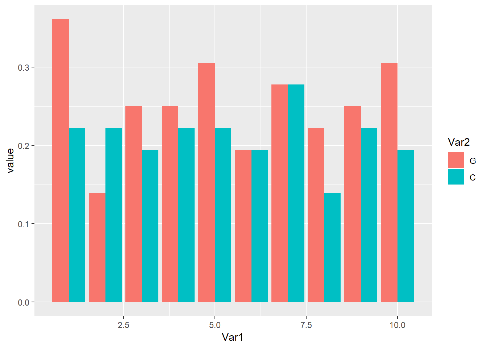

11 Lecture 10 - Sequence analysis in R I
강의 노트 Lecture note
이번 시간부터는 R을 이용한 서열분석에 대해서 알아보겠습니다. 지난 시간까지 배운 내용은 함수를 만들고 사용하는 법과 ggplot2 패키지를 이용한 그래프 그리는 방법 그리고 dplyr 패키지를 이용한 데이터 재구성 방법 등에 대해서 배웠습니다. R을 이용한 서열 분석도 기본적으로는 패키지를 사용하는 방법에 관한 내용입니다. 서열을 다루기 위한 기본 툴은 Biostrings 입니다. 그리고 NCBI 데이터를 활용하기 위한 reutils와 다음 시간에 배울 서열 분석 툴인 DECIPER를 배우게 되겠습니다.
수업시간에 설명 드린것 처럼 R로 생물학 데이터를 분석하기 위해서는 Bioconductor라는 사이트를 먼저 이해해야 합니다. R 기반의 생물정보학 툴과 데이터 그리고 분석 방법 등을 공유하고 제공하는 곳으로 대부분의 생물학 관련 패키지도 이 곳에서 얻을 수 있습니다. 강의노트와 수업시간 설명드린 내용을 참고하시면 되겠습니다.
11.1 Biostrings package for sequence analysis
먼저 Biostrings는 아래와 같이 Bioconductor에서 제공하는 코드를 이용해서 설치할 수 있습니다.
if (!requireNamespace("BiocManager", quietly = TRUE))
install.packages("BiocManager")
BiocManager::install("Biostrings")library(Biostrings)## Warning: package 'Biostrings' was built under R version 3.5.2Biostrings 패키지는 기본적으로 XString, XStringSet, XStringViews 3가지의 class를 정의하고 있습니다. XString은 DNA나 RNA, AA 등 생물학적 서열 한 가닥을 다루기위한 클래스이며 XStringSet은 여러 가닥을 다루기위한 클래스 입니다.
여기서 참고로 class의 개념을 좀 더 확실히 이해하고 가는 것이 좋습니다. 우리가 배운 class는 vector, array, data.frame, matrix, list, factor 정도가 있습니다. 이들은 data type이나 object type 등으로 불리우며 사용자가 임의로 새로운 class를 정의할 수 있습니다 (numeric, logical, character 등은 core data type 또는 mode라고 부릅니다). XString 또한 개발자들이 만들어 놓은 object type들 중 하나로 생각하시면 됩니다.
다음 predefined constants 들은 Biostrings 패키지를 로드하면 자동으로 저장되는 변수들로 생물학적 서열을 미리 정의해 놓았습니다.
DNA_BASES## [1] "A" "C" "G" "T"DNA_ALPHABET## [1] "A" "C" "G" "T" "M" "R" "W" "S" "Y" "K" "V" "H" "D" "B" "N" "-" "+"
## [18] "."IUPAC_CODE_MAP## A C G T M R W S Y K
## "A" "C" "G" "T" "AC" "AG" "AT" "CG" "CT" "GT"
## V H D B N
## "ACG" "ACT" "AGT" "CGT" "ACGT"위 변수들을 이용하면 다음처럼 랜덤하게 DNA 서열을 얻을 수 있습니다. DNA_BASES가 4개 길이를 갖는 벡터인데 이 중 10개를 뽑으려면 replace=T로 해야 합니다. paste함수는 문자열을 붙이는 기능을 하며 서열을 다루는데 필수인 함수로 그 사용법을 정확히 알아두면 좋습니다. help 페이지를 보면 sep과 collapse라는 두 개의 파라메터를 갖는데요 이 두 파라메터의 용도는 sep의 경우 서로 다른 문자열을 붙일 때 (즉 다른 변수에 저장된 여러 문자열) 어떤 문자를 사이에 넣을지를 결정하는 파라메터이고 collapse는 한 변수에 저장된 여러 문자열을 붙일 때 사이에 넣는 문자를 결정하는 파라메터 입니다.
x0 <- sample(DNA_BASES, 10, replace = T)
x0## [1] "A" "A" "C" "A" "G" "T" "A" "T" "C" "T"x1 <- paste(x0, collapse="")
x1## [1] "AACAGTATCT"XString 클래스 특히 DNAString 클래스의 사용법은 다음 코드를 통해 익힐 수 있습니다. length 함수는 핵산의 갯수를 (DNAStringSet 타입의 변수에서 length는 DNA 가닥의 갯수이며 핵산의 갯수는 nchar함수로 얻어낼 수 있습니다. toString은 DNAString 타입을 단순 문자열로 변환해주는 함수이며 상보서열, 역상보서열 등의 정보도 complement, reverseComplement 등을 사용하여 찾아낼 수 있습니다.
x0 <- paste(sample(DNA_BASES, 10, replace = T), collapse="")
x1 = DNAString(x0)
class(x0)
class(x1)
length(x1)
toString(x1)
complement(x1)
Biostrings::complement(x1)
reverseComplement(x1)DNAString의 인덱싱은 vector (string)과 같으며 DNAStringSet은 list의 인덱싱과 같습니다.
## indexing
x1[1]
x1[1:3]
subseq(x1, start=3, end=5)
subseq(x1, 3, 5)
## letter frequency
alphabetFrequency(x1, baseOnly=TRUE, as.prob=TRUE)
letterFrequency(x1, c("G", "C"), as.prob=TRUE)11.1.1 Exercise 10-1
x0 <- paste(sample(DNA_BASES, 30, replace = T), collapse="")
x0
x1 <- paste("ATG", x0, "TAG", sep="")
x1
x1 <- DNAString(x1)
x1
class(x1)
complement(x1)
translate(x1)DNAStringSet class는 여러개의 DNAString 을 모아 놓은 집합이라고 보면 됩니다. length 함수는 DNA string의 갯수이며 width 또는 nchar 함수로 각 string의 길이를 구할 수 있으며 이 외 대부분의 DNAString 에서 사용되는 함수가 동일하게 사용될 수 있습니다.
x0 <- c("CTC-NACCAGTAT", "TTGA", "TACCTAGAG")
x1 <- DNAStringSet(x0)
class(x0)
class(x1)
names(x1)
names(x1) <- c("A", "B", "C")
length(x1)
width(x1)
subseq(x1, 2, 4)
x1[[1]]
x1[1]
alphabetFrequency(x1, baseOnly=TRUE, as.prob=TRUE)
letterFrequency(x1, c("G", "C"), as.prob=TRUE)11.1.2 Exercise 10-2
이번 예제는 앞서 10-1과 같은 방법으로 10개의 서열을 만드는 것입니다. 아래는 가장 직관적으로 생각할 수 있는 for를 이용한 방법입니다. 즉, 10개 저장소를 갖는 x0 변수를 미리 생성해 두고 for 문을 돌면서 앞서 10-1예제와 같은 방법으로 서열을 하나씩 만들어 저장하는 방법입니다.
x0 <- rep("", 10)
for(i in 1:length(x0)){
tmp <- paste(sample(DNA_BASES, 30, replace = T), collapse="")
x0[i] <- paste("ATG", tmp, "TAG", sep="")
}
x0## [1] "ATGTTGGCCCACGATGCGCGACAATCTCTGACATAG"
## [2] "ATGTAAGCCGCGGTCGCAAAGTGTACCTATGGTTAG"
## [3] "ATGACACTCTAAAGCCGAAGCAAAGATAACTCATAG"
## [4] "ATGTCCCCACACCGCCTCACTCGAGGGAGATCCTAG"
## [5] "ATGCATCCTGCGGGCACGGCATTGTACCGGATGTAG"
## [6] "ATGAACTGGGATCTTTTCAGGGCCAAAGGTGCCTAG"
## [7] "ATGTCCTGACTGACTTACCCGGACTGCCGGGTGTAG"
## [8] "ATGTGATATGTTCGCATTATACATACACACCCGTAG"
## [9] "ATGCTTCCATCCGCTCTCGCGACATAGTTCCTATAG"
## [10] "ATGGTCGATCGTTGTACTGCTACAGACTGGTGTTAG"위 코드를 지금까지 배운 내용들에 있는 편리한 기능을 사용해서 만들어 보겠습니다. 위 코드는 random dna를 만들 때 길이만 다를뿐 같은 코드를 반복해서 사용하고 있습니다. 이럴 경우 DNA 길이를 사용자가 정해주도록 input parameter로 하고 해당 파라메터를 받아 DNA를 만들어 주는 함수를 만들어 사용하면 편리합니다.
random_dna <- function(len){
tmp <- paste(sample(DNA_BASES, len, replace = T), collapse="")
x0[i] <- paste("ATG", tmp, "TAG", sep="")
return(x0)
}파라메터로 넘겨진 len 값이 sample 함수의 len에 사용된 것을 참고하세요. 또한 다음처럼 파이프오퍼레이터 %>%를 사용해서 함수 내부 코드를 한 줄로 바꿀수도 있습니다.
random_dna <- function(len){
DNA_BASES %>% sample(len, replace=T) %>% paste(collapse="") %>% paste("ATG", ., "TAG", sep="")
}이제 길이 30bp짜리 10개의 서열을 반복해서 만들 때 위 함수를 앞서와 같이 for문을 이용하여 10번 반복해서 실행해 주면 같은 결과를 얻습니다. 위와 같이 함수를 만들어 두면 언제든 DNA 서열을 만들 때 재사용 할 수 있습니다.
x0 <- rep("", 10)
for(i in 1:length(x0)){
x0[i] <- random_dna(30)
}
x0## [1] "ATGACTCACGTCAGCGATTCTTATCGCGCATCTTAG"
## [2] "ATGATGGATGACTCTGTATCGCTTTGGGTGAAGTAG"
## [3] "ATGGGCTACTTGCTATGAATATATATTGTCATGTAG"
## [4] "ATGCGCGGATGCCCGGTTTACTTGGTAGTCTCATAG"
## [5] "ATGCACGGGTACGGGACACATGACTTGGACACGTAG"
## [6] "ATGATTTTTTGTCATATCGCAGGGATTCGAACATAG"
## [7] "ATGGGAGCTCAATATCCTCTAACGATACTGGTTTAG"
## [8] "ATGACAGCTGCTCACGGTGGAAATATTTAGAGATAG"
## [9] "ATGTATCACCCCAACACCTCTGCTTTTCGTCCATAG"
## [10] "ATGGGTCGAATGCATTGTGGACAATCGATATTATAG"그런데 R에는 apply 와 같은 행렬연산 함수가 있어서 for문을 사용하지 않고 편리하게 반복문을 실행할 수 있습니다. replicate 함수는 apply와 같은 기능으로 list나 vector 변수에 대해서 사용할 수 있습니다. 즉, 다음과 같이 사용자가 원하는 함수를 반복해서 실행하고 반복 수 만큼의 길이를 갖는 결과를 반환합니다.
x0 <- replicate(10, random_dna(30))
x0## [1] "ATGACTACGACATACGACAACGTCGGATAAGTCTAG"
## [2] "ATGCGTCGAGGACGACTACTGTACACTACCTTGTAG"
## [3] "ATGGAGCACAGAAACTGGTTACGCTGCTACGAGTAG"
## [4] "ATGAAAGTGCGATTCTTCGGAGAGGTGAACAATTAG"
## [5] "ATGAACTTATTTGATTCTGTCACTCTGGGCTGGTAG"
## [6] "ATGAAAACGTCGACTCCGAGAAGCTACCCGCCATAG"
## [7] "ATGGCCAAGAGCTGATGTGGGCAAACTGTATCCTAG"
## [8] "ATGTCTGAAATCATCACTGACACACTCGTCCTGTAG"
## [9] "ATGCCATGGCGGTATTGGTAATAACCCCACAGATAG"
## [10] "ATGGGTCTCTCCACCCTTGGCGGGGTGTAAGAATAG"위 x0 스트링들을 XStringSet으로 바꾸고 GC 비율을 구한 후 ggplot을 이용하여 bargraph를 그리는 코드는 다음과 같습니다. gc_ratio가 G와 C의 비율값을 저장한 10x2 테이블이므로 x축에 10개의 서열과 각 서열의 GC비율을 나타내고 y축에 비율 값을 그리는 것으로 생각한 후 ggplot의 aes와 파라메터를 적절히 지정해 줍니다.
x1 <- DNAStringSet(x0)
gc_ratio <- letterFrequency(x1, c("G", "C"), as.prob=TRUE)
gc_ratio_melt <- melt(gc_ratio)
print(gc_ratio_melt)## Var1 Var2 value
## 1 1 G 0.2222222
## 2 2 G 0.2500000
## 3 3 G 0.3055556
## 4 4 G 0.3055556
## 5 5 G 0.2500000
## 6 6 G 0.2222222
## 7 7 G 0.3055556
## 8 8 G 0.1666667
## 9 9 G 0.2500000
## 10 10 G 0.3333333
## 11 1 C 0.2222222
## 12 2 C 0.2500000
## 13 3 C 0.1944444
## 14 4 C 0.1111111
## 15 5 C 0.1666667
## 16 6 C 0.3055556
## 17 7 C 0.1944444
## 18 8 C 0.2777778
## 19 9 C 0.2222222
## 20 10 C 0.2222222ggplot(gc_ratio_melt, aes(x=Var1, y=value, fill=Var2)) +
geom_bar(stat="identity", position="dodge")
Biostrings의 마지막 class인 XStringView는 XString class의 DNA서열을 사용자가 원하는대로 볼 수 있는 인터페이스를 제공합니다. 사용법은 다음과 같습니다.
x2 <- x1[[1]]
Views(x2, start=1, width=20)
Views(x2, start=1, end=4)
Views(x2, start=c(1,3), end=4)
Views(x2, start=c(1,3,4), width=20)
Views(x2, start=c(1,3,4), width=20)다음과 같이 한 서열에 대한 여러 부분의 서열 조각도 볼 수 있으며 gaps 함수는 매개변수로 주어진 서열 view의 구간을 제외한 나머지 구간의 서열을 보여주는 함수입니다. successiveviews 함수는 처음 서열부터 매개변수 width에 주어진 갯수 만큼의 서열을 보여주며 rep() 함수를 이용해서 서열의 처음부터 끝까지 보여주는 기능을 합니다.
v <- Views(x2, start=c(1,10), end=c(3,15))
gaps(v)
successiveViews(x2, width=20)
successiveViews(x2, width=rep(20, 2))
successiveViews(x2, width=rep(20, 3))11.1.3 Excercise 10-3
1000bp 길이의 랜덤 DNA 서열을 만들고 40bp 단위의 길이로 보는 코드 입니다. 앞서 만들어둔 random_dna() 함수를 사용하면 되겠습니다. successiveview 함수를 사용해야 하므로 DNAString으로 변환이 필요하며 서열의 길이에 따라서 rep() 를 이용한 반복 횟수를 자동으로 계산하기 위해서 다음처럼 코딩할 수 있습니다.
x0 <- random_dna(1000)
x1 <- DNAString(x0)
successiveViews(x1, width=rep(40, (nchar(x1)/40)+1))## Views on a 1006-letter DNAString subject
## subject: ATGCCCTTCCGAGCACTTTACGCTGTAGGAGA...TATGTTATATCGCCGAACGAACGCTCCTTAG
## views:
## start end width
## [1] 1 40 40 [ATGCCCTTCCGAGCACTTTACGCTGTAGGAGAACAGTAAG]
## [2] 41 80 40 [AGCCGGTGCCATCACGCGCAAACAACTCAGTAAATTCGAT]
## [3] 81 120 40 [CCAAAGATGACCAAGTATCTTTTCGGTATAAGCCGCCGGT]
## [4] 121 160 40 [ACTCTAACTACTGAGGAGTCACCTGACCTGAGAATATTGT]
## [5] 161 200 40 [GGGTACTCTACTGCCCGTACACTTAGGCTAAGATACAGGC]
## ... ... ... ... ...
## [22] 841 880 40 [AAGGCTGAATATGGGTTTGAAAACGCCCAGACCGTAAGTG]
## [23] 881 920 40 [GGAACTAAAACGACGCTGGAATGTGGGTCCATGCTCCTCC]
## [24] 921 960 40 [GATTGCTGACGAGCGCGGGTACACTTAGTTCTGTTGCCAA]
## [25] 961 1000 40 [TCTCAATGACGGACCTATGTTATATCGCCGAACGAACGCT]
## [26] 1001 1040 40 [CCTTAG ]11.2 Download sequence information from NCBI
전세계 연구자들이 서열 데이터를 분석하는데 가장 많이 이용하는 사이트 중 하나가 NCBI 이며 따라서 NCBI에서는 연구자들이 데이터베이스에 접근하기위한 편리한 방법을 제공하고 있고 그 중 하나가 Entrez 입니다. R에서도 Entrez 기능을 도입한 package들이 제공되고 있으며 그 중 하나가 reutils 입니다. https://www.ncbi.nlm.nih.gov/books/NBK25500/ 이 곳의 Downloading Full Records 를 참고하시면 좋습니다. Entrez는 대략적으로 다음 9개의 유틸리티를 제공합니다.
EInfo (database statistics)
ESearch (text searches)
EPost (UID uploads)
ESummary (document summary downloads)
EFetch (data record downloads)
ELink (Entrez links)
EGQuery (global query)
ESpell (spelling suggestions)
ECitMatch (batch citation searching in PubMed)
이 중 ESerach, EPost, ESummary, EFetch 등이 많이 사용하는 유틸이며 정보를 다운로드 받을 경우는 EFetch 를 주로 사용하게 됩니다. 예제로 뎅기바이러스 서열 4종을 다운로드 하겠습니다. NCBI의 accession 번호를 알 경우이며 각각에 대한 accession no.는 NC_001477, NC_001474, NC_001475 and NC_002640 입니다.
acc <- c("NC_001477", "NC_001474", "NC_001475", "NC_002640")
ep <- epost(acc, "nuccore")
ef <- efetch(ep, retmode = "text", rettype = "fasta")
nc <- content(ef)